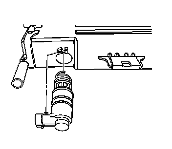

Canister Vent Valve: Service and Repair
Evaporative Emission Canister Vent Solenoid Valve Replacement
Removal Procedure
1. Remove the evaporative emission (EVAP) canister. Refer to Evaporative Emission Canister Replacement (Service and Repair) .
2. Clean away any debris that may be present around the EVAP canister vent valve.

3. Twist the EVAP canister vent valve counter-clockwise.
4. Pull the EVAP canister vent valve from the EVAP canister.
Installation Procedure
1. Insert the EVAP canister vent valve into the EVAP canister.
2. Twist the EVAP canister vent valve clockwise into the locked position.
3. Install the EVAP canister. Refer to Evaporative Emission Canister Replacement (Service and Repair) .